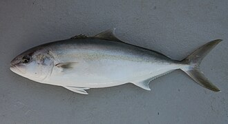

かんぱち（間八）の生産量 都道府県ランキング
1位から3位までと、とれた量
かんぱちが日本でいちばん多く育てられているのは鹿児島県です。1万4,574 tで、全国（2万3,344 t）の62%を占めます。

| 順位 | 都道府県 | 収獲量 | 全国に占める割合 |
|---|---|---|---|
| 1位 | 鹿児島県 | 1万4,574 t | 62% |
| 2位 | 高知県 | 2,216 t | 9.5% |
| 3位 | 宮崎県 | 1,979 t | 8.5% |
この数字について
- 分類：鯵の仲間
- 全国の収獲量：2万3,344 t
- この数字が表すもの：収獲量（養殖で育てて取り上げた重さ）
- 調査：海面漁業生産統計調査（海面養殖業） 令和6年
- この品目は養殖の統計です。
- 9県分を調査（調査していない県は順位に入りません）
かんぱちの生産量について、よくある質問
- かんぱちの生産量が日本一の都道府県はどこですか？
- 鹿児島県です。海面漁業生産統計調査（海面養殖業）（令和6年）で1万4,574 tでした。
- かんぱちの生産量ランキング2位・3位はどこですか？
- 2位は高知県（2,216 t）、3位は宮崎県（1,979 t）です。
- かんぱちの全国の生産量はどれくらいですか？
- 2万3,344 t（令和6年）です。